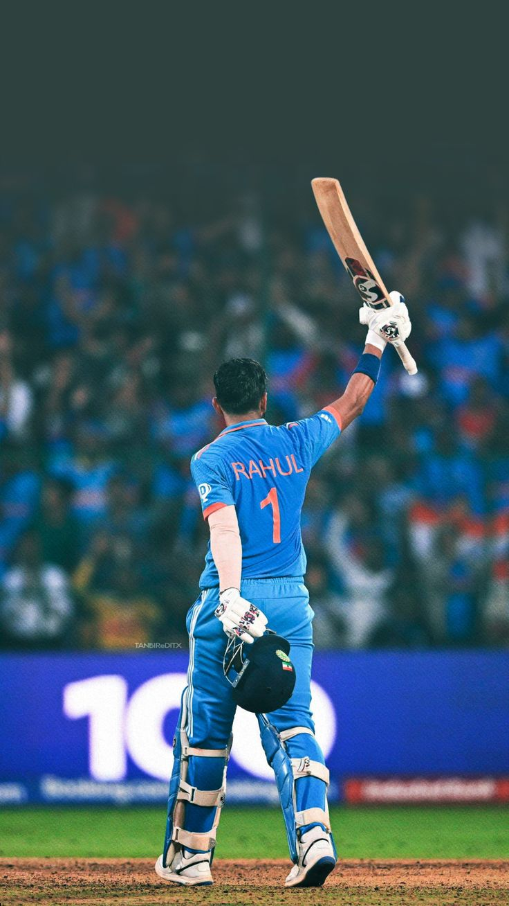
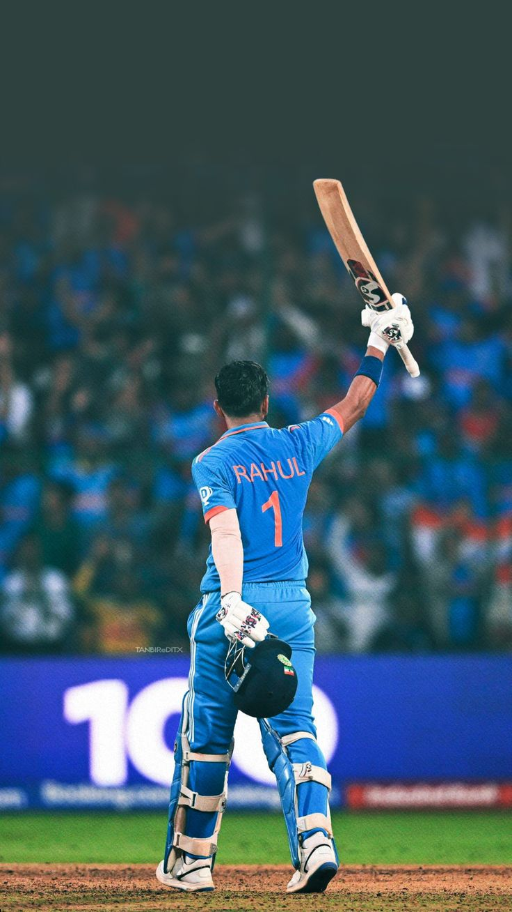

Kannur Lokesh Rahul is an Indian international cricketer who plays for the Indian national team. A right-handed wicket-keeper batter, he plays for Karnataka in domestic cricket and captains Lucknow Super Giants in the Indian Premier League. Wikipedia Born: 18 April 1992 (age 32 years), Bengaluru Spouse: Athiya Shetty (m. 2023) Current teams: India national cricket team (Wicket-keeper), Lucknow Super Giants (Wicket-keeper) Height: 1.8 m Parents: Rajeshwari Lokesh, Dr. K. N. Lokesh Runner-up: 2023 India
 
